当前 94 款：46 款 Poly Haven 原始 PBR 模型，25 款现成模型完成材质修正，23 款原创建模的日常家具。已移除尺寸示意、通用几何拼装和未通过外观检查的模型。截图直接来自对应 GLB。
保留原网格和 UV，不进行减面。Poly Haven 模型含原始 2K 材质贴图；其他模型保留原始贴图，并修正金属、玻璃、涂层与陶瓷反射。尺寸采用原模型的比例或标称值，不等于品牌实测。
Poly Haven CC0 许可 · 逐项审核记录 · 统计 · 返回模拟器
| 模型实景 | 模型 / 尺寸 | 来源 / 许可 |
|---|---|---|
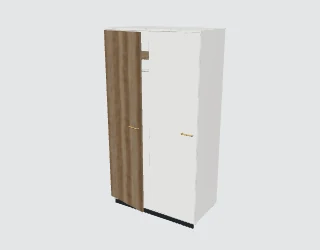 橡木暖白双门衣柜 | 原创建模 · 倒角 / 五金 / PBR 120.0 × 75.9 × 219.9 cm 原创设计尺寸 · 可按需缩放 | 家装模拟器 · 原创建模 原创模型；纹理 CC0-1.0 |
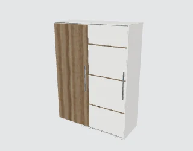 窄轨推拉衣柜 | 原创建模 · 倒角 / 五金 / PBR 160.0 × 64.4 × 212.0 cm 原创设计尺寸 · 可按需缩放 | 家装模拟器 · 原创建模 原创模型；纹理 CC0-1.0 |
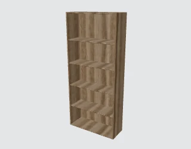 橡木可调层板书柜 | 原创建模 · 倒角 / 五金 / PBR 80.0 × 30.0 × 179.0 cm 原创设计尺寸 · 可按需缩放 | 家装模拟器 · 原创建模 原创模型；纹理 CC0-1.0 |
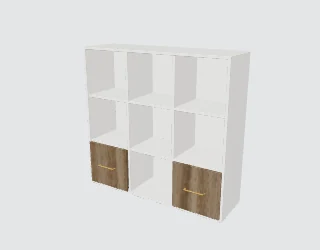 九格抽屉收纳柜 | 原创建模 · 倒角 / 五金 / PBR 122.0 × 40.6 × 116.0 cm 原创设计尺寸 · 可按需缩放 | 家装模拟器 · 原创建模 原创模型；纹理 CC0-1.0 |
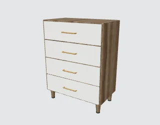 细脚四斗抽屉柜 | 原创建模 · 倒角 / 五金 / PBR 80.0 × 49.9 × 105.0 cm 原创设计尺寸 · 可按需缩放 | 家装模拟器 · 原创建模 原创模型；纹理 CC0-1.0 |
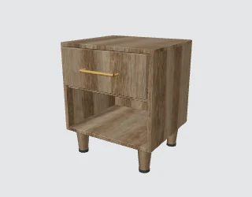 开放格床头柜 | 原创建模 · 倒角 / 五金 / PBR 45.0 × 44.7 × 53.0 cm 原创设计尺寸 · 可按需缩放 | 家装模拟器 · 原创建模 原创模型；纹理 CC0-1.0 |
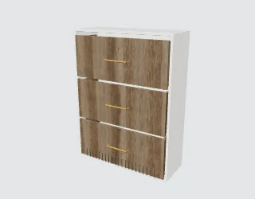 窄进深三层鞋柜 | 原创建模 · 倒角 / 五金 / PBR 80.0 × 32.6 × 103.0 cm 原创设计尺寸 · 可按需缩放 | 家装模拟器 · 原创建模 原创模型；纹理 CC0-1.0 |
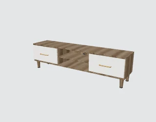 钢琴白橡木电视柜 | 原创建模 · 倒角 / 五金 / PBR 180.0 × 45.0 × 49.0 cm 原创设计尺寸 · 可按需缩放 | 家装模拟器 · 原创建模 原创模型；纹理 CC0-1.0 |
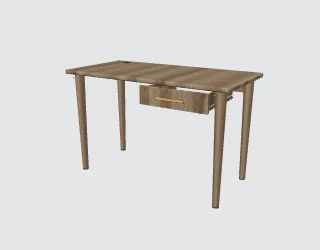 抽屉实木书桌 | 原创建模 · 倒角 / 五金 / PBR 120.0 × 64.1 × 75.3 cm 原创设计尺寸 · 可按需缩放 | 家装模拟器 · 原创建模 原创模型；纹理 CC0-1.0 |
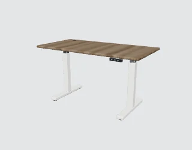 双柱电动升降桌 | 原创建模 · 倒角 / 五金 / PBR 140.0 × 72.5 × 75.3 cm 原创设计尺寸 · 可按需缩放 | 家装模拟器 · 原创建模 原创模型；纹理 CC0-1.0 |
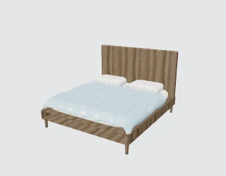 橡木双人床与浅蓝床品 | 原创建模 · 倒角 / 五金 / PBR 188.8 × 210.0 × 135.0 cm 原创设计尺寸 · 可按需缩放 | 家装模拟器 · 原创建模 原创模型；纹理 CC0-1.0 |
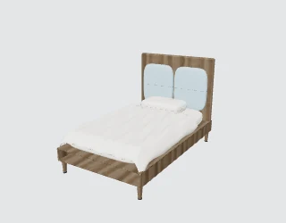 软包靠背单人床 | 原创建模 · 倒角 / 五金 / PBR 128.9 × 210.0 × 135.0 cm 原创设计尺寸 · 可按需缩放 | 家装模拟器 · 原创建模 原创模型；纹理 CC0-1.0 |
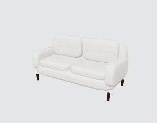 米白宽扶手双人沙发 | 原创建模 · 倒角 / 五金 / PBR 205.5 × 92.0 × 104.2 cm 原创设计尺寸 · 可按需缩放 | 家装模拟器 · 原创建模 原创模型；纹理 CC0-1.0 |
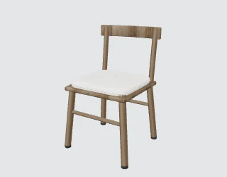 橡木弧背软座餐椅 | 原创建模 · 倒角 / 五金 / PBR 50.8 × 52.1 × 81.9 cm 原创设计尺寸 · 可按需缩放 | 家装模拟器 · 原创建模 原创模型；纹理 CC0-1.0 |
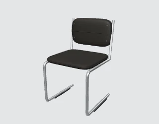 镀铬悬臂皮革餐椅 | 原创建模 · 倒角 / 五金 / PBR 50.4 × 53.0 × 82.1 cm 原创设计尺寸 · 可按需缩放 | 家装模拟器 · 原创建模 原创模型；纹理 CC0-1.0 |
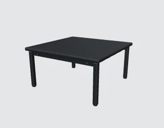 黑色圆角正方茶几 | 原创建模 · 倒角 / 五金 / PBR 70.0 × 70.0 × 36.0 cm 原创设计尺寸 · 可按需缩放 | 家装模拟器 · 原创建模 原创模型；纹理 CC0-1.0 |
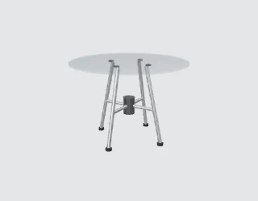 透明玻璃圆餐桌 | 原创建模 · 倒角 / 五金 / PBR 108.0 × 108.0 × 75.0 cm 原创设计尺寸 · 可按需缩放 | 家装模拟器 · 原创建模 原创模型；纹理 CC0-1.0 |
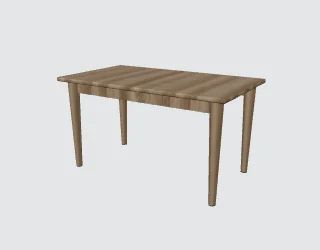 圆角橡木四人餐桌 | 原创建模 · 倒角 / 五金 / PBR 140.0 × 80.0 × 75.8 cm 原创设计尺寸 · 可按需缩放 | 家装模拟器 · 原创建模 原创模型；纹理 CC0-1.0 |
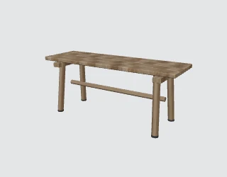 橡木分片换鞋长凳 | 原创建模 · 倒角 / 五金 / PBR 110.0 × 36.2 × 45.8 cm 原创设计尺寸 · 可按需缩放 | 家装模拟器 · 原创建模 原创模型；纹理 CC0-1.0 |
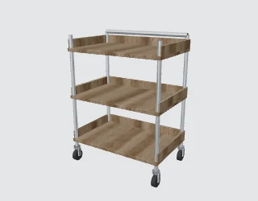 三层钢木收纳推车 | 原创建模 · 倒角 / 五金 / PBR 66.7 × 45.6 × 88.2 cm 原创设计尺寸 · 可按需缩放 | 家装模拟器 · 原创建模 原创模型；纹理 CC0-1.0 |
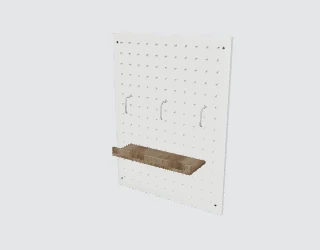 穿孔洞洞板与挂件 | 原创建模 · 倒角 / 五金 / PBR 60.0 × 19.2 × 80.0 cm 原创设计尺寸 · 可按需缩放 | 家装模拟器 · 原创建模 原创模型；纹理 CC0-1.0 |
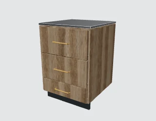 不锈钢台面三抽地柜 | 原创建模 · 倒角 / 五金 / PBR 60.4 × 65.3 × 86.0 cm 原创设计尺寸 · 可按需缩放 | 家装模拟器 · 原创建模 原创模型；纹理 CC0-1.0 |
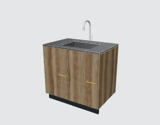 不锈钢水槽双门地柜 | 原创建模 · 倒角 / 五金 / PBR 90.0 × 65.1 × 118.4 cm 原创设计尺寸 · 可按需缩放 | 家装模拟器 · 原创建模 原创模型；纹理 CC0-1.0 |
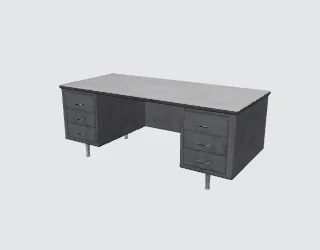 金属双柜书桌 | 完整造型 · 原始 PBR 材质 200.0 × 94.7 × 78.8 cm 原模型米制比例 · 非品牌实测 | Ulan Cabanilla / Poly Haven CC0-1.0 |
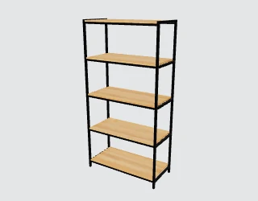 钢木五层置物架 | 完整造型 · 原始 PBR 材质 109.7 × 50.2 × 214.1 cm 来源标称尺寸 · 统一单位校准 | James Ray Cock / Poly Haven CC0-1.0 |
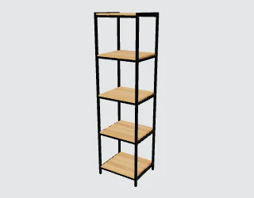 钢木宽幅置物架 | 完整造型 · 原始 PBR 材质 59.3 × 50.2 × 214.2 cm 原模型米制比例 · 非品牌实测 | James Ray Cock / Poly Haven CC0-1.0 |
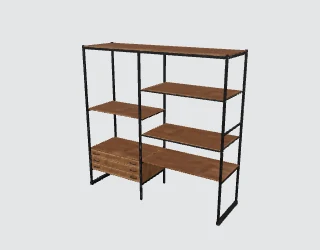 钢木抽屉置物架 | 完整造型 · 原始 PBR 材质 235.1 × 72.1 × 231.2 cm 原模型米制比例 · 非品牌实测 | Ulan Cabanilla / Poly Haven CC0-1.0 |
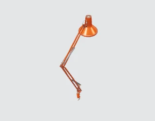 关节长臂台灯 | 完整造型 · 原始 PBR 材质 20.2 × 61.4 × 89.3 cm 原模型米制比例 · 非品牌实测 | Yann Kervran, Kuutti Siitonen / Poly Haven CC0-1.0 |
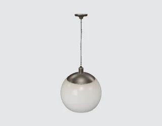 现代玻璃吊灯 | 完整造型 · 原始 PBR 材质 43.2 × 43.2 × 95.2 cm 原模型米制比例 · 非品牌实测 | James Ray Cock / Poly Haven CC0-1.0 |
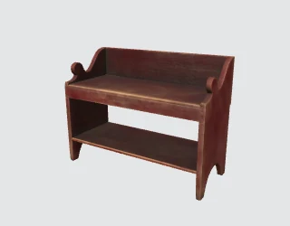 靠背木长凳 | 完整造型 · 原始 PBR 材质 116.5 × 49.7 × 88.9 cm 原模型米制比例 · 非品牌实测 | Kirill Sannikov / Poly Haven CC0-1.0 |
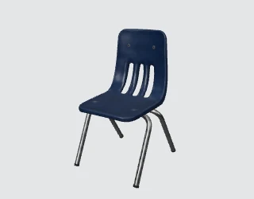 木座金属学习椅 | 完整造型 · 原始 PBR 材质 56.6 × 67.5 × 100.6 cm 原模型米制比例 · 非品牌实测 | Ethan Place / Poly Haven CC0-1.0 |
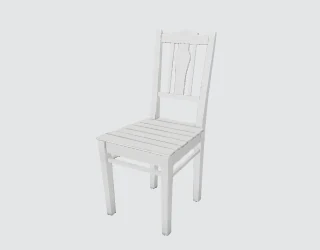 涂装木餐椅 | 完整造型 · 原始 PBR 材质 43.2 × 54.0 × 95.6 cm 原模型米制比例 · 非品牌实测 | Kuutti Siitonen / Poly Haven CC0-1.0 |
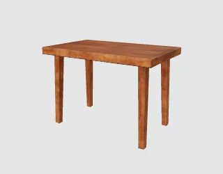 木质工作桌 | 完整造型 · 原始 PBR 材质 113.4 × 70.6 × 80.0 cm 原模型米制比例 · 非品牌实测 | Serhii Khromov / Poly Haven CC0-1.0 |
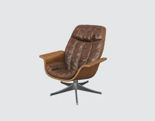 中古皮革休闲椅 | 完整造型 · 原始 PBR 材质 100.9 × 119.0 × 116.9 cm 原模型米制比例 · 非品牌实测 | Kuutti Siitonen / Poly Haven CC0-1.0 |
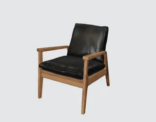 现代软包扶手椅 | 完整造型 · 原始 PBR 材质 82.0 × 98.7 × 102.3 cm 原模型米制比例 · 非品牌实测 | Vibrant Nordic / Poly Haven CC0-1.0 |
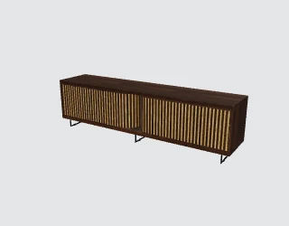 现代木柜 | 完整造型 · 原始 PBR 材质 244.0 × 52.0 × 68.0 cm 原模型米制比例 · 非品牌实测 | Patrik Pangerl / Poly Haven CC0-1.0 |
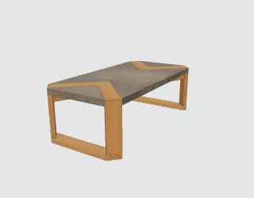 现代茶几 01 | 完整造型 · 原始 PBR 材质 60.0 × 120.2 × 39.0 cm 原模型米制比例 · 非品牌实测 | Amin / Poly Haven CC0-1.0 |
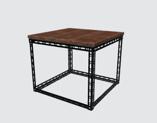 工业风茶几 | 完整造型 · 原始 PBR 材质 77.8 × 75.8 × 63.8 cm 原模型米制比例 · 非品牌实测 | Ulan Cabanilla / Poly Haven CC0-1.0 |
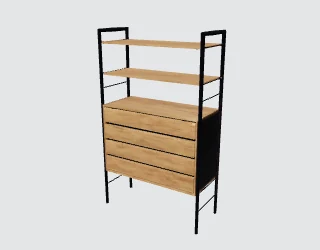 木质抽屉柜 | 完整造型 · 原始 PBR 材质 114.1 × 48.8 × 188.1 cm 原模型米制比例 · 非品牌实测 | Ulan Cabanilla / Poly Haven CC0-1.0 |
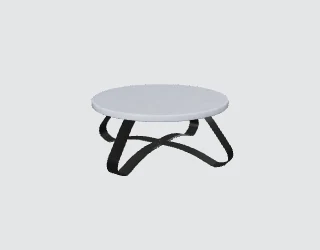 圆形茶几 | 完整造型 · 原始 PBR 材质 130.1 × 130.1 × 49.1 cm 原模型米制比例 · 非品牌实测 | Ulan Cabanilla / Poly Haven CC0-1.0 |
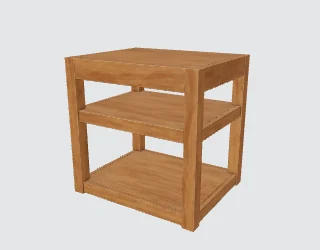 木质边桌 | 完整造型 · 原始 PBR 材质 55.0 × 45.0 × 55.1 cm 原模型米制比例 · 非品牌实测 | James Ray Cock / Poly Haven CC0-1.0 |
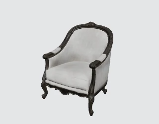 织物扶手椅 | 完整造型 · 原始 PBR 材质 84.8 × 76.6 × 106.5 cm 原模型米制比例 · 非品牌实测 | Kirill Sannikov / Poly Haven CC0-1.0 |
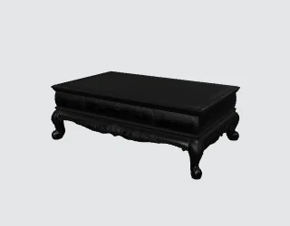 实木茶几 | 完整造型 · 原始 PBR 材质 154.0 × 97.3 × 52.3 cm 原模型米制比例 · 非品牌实测 | Fernando Quinn / Poly Haven CC0-1.0 |
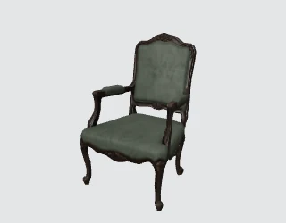 绿色软包休闲椅 | 完整造型 · 原始 PBR 材质 67.3 × 66.4 × 105.9 cm 原模型米制比例 · 非品牌实测 | Kirill Sannikov / Poly Haven CC0-1.0 |
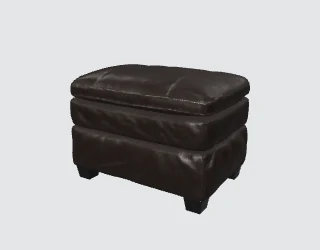 软包脚凳 | 完整造型 · 原始 PBR 材质 88.5 × 62.1 × 62.4 cm 原模型米制比例 · 非品牌实测 | Caspian Fortune / Poly Haven CC0-1.0 |
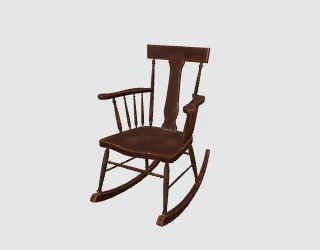 木质摇椅 | 完整造型 · 原始 PBR 材质 70.8 × 83.3 × 99.5 cm 原模型米制比例 · 非品牌实测 | Jorge Camacho / Poly Haven CC0-1.0 |
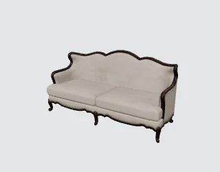 布艺沙发 | 完整造型 · 原始 PBR 材质 157.1 × 65.8 × 79.7 cm 原模型米制比例 · 非品牌实测 | Kirill Sannikov / Poly Haven CC0-1.0 |
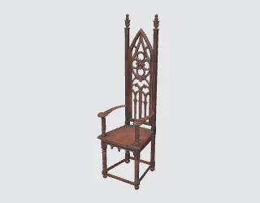 木质餐椅 | 完整造型 · 原始 PBR 材质 68.8 × 65.8 × 227.4 cm 原模型米制比例 · 非品牌实测 | Jake Mobley / Poly Haven CC0-1.0 |
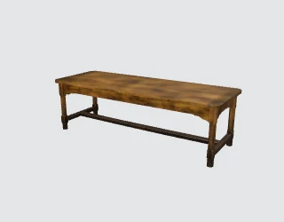 实木茶几 | 完整造型 · 原始 PBR 材质 180.0 × 65.7 × 54.9 cm 原模型米制比例 · 非品牌实测 | Ethan Place / Poly Haven CC0-1.0 |
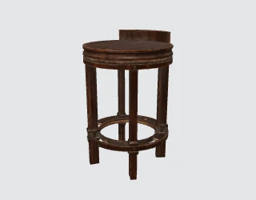 圆座吧椅 | 完整造型 · 原始 PBR 材质 48.3 × 48.6 × 75.1 cm 原模型米制比例 · 非品牌实测 | Dairon Sanchez / Poly Haven CC0-1.0 |
中式扶手椅 | 完整造型 · 原始 PBR 材质 84.8 × 78.9 × 158.7 cm 原模型米制比例 · 非品牌实测 | Kirill Sannikov / Poly Haven CC0-1.0 |
中式高柜 | 完整造型 · 原始 PBR 材质 126.2 × 54.5 × 287.2 cm 原模型米制比例 · 非品牌实测 | Kirill Sannikov / Poly Haven CC0-1.0 |
中式斗柜 | 完整造型 · 原始 PBR 材质 449.0 × 117.0 × 202.0 cm 原模型米制比例 · 非品牌实测 | Kirill Sannikov / Poly Haven CC0-1.0 |
中式条案 | 完整造型 · 原始 PBR 材质 172.0 × 33.9 × 66.1 cm 原模型米制比例 · 非品牌实测 | Kirill Sannikov / Poly Haven CC0-1.0 |
中式木沙发 | 完整造型 · 原始 PBR 材质 228.5 × 96.9 × 86.0 cm 原模型米制比例 · 非品牌实测 | Kirill Sannikov / Poly Haven CC0-1.0 |
中式圆凳 | 完整造型 · 原始 PBR 材质 59.9 × 50.6 × 63.1 cm 原模型米制比例 · 非品牌实测 | Kirill Sannikov / Poly Haven CC0-1.0 |
中式茶桌 | 完整造型 · 原始 PBR 材质 84.1 × 83.6 × 49.9 cm 原模型米制比例 · 非品牌实测 | Kirill Sannikov / Poly Haven CC0-1.0 |
软包餐椅 | 完整造型 · 原始 PBR 材质 43.4 × 57.6 × 97.3 cm 原模型米制比例 · 非品牌实测 | James Ray Cock / Poly Haven CC0-1.0 |
独立式电灶烤箱 | 完整造型 · 原始 PBR 材质 50.3 × 64.8 × 85.9 cm 原模型米制比例 · 非品牌实测 | Kuutti Siitonen / Poly Haven CC0-1.0 |
折叠木凳 | 完整造型 · 原始 PBR 材质 52.8 × 54.7 × 44.2 cm 原模型米制比例 · 非品牌实测 | Ulan Cabanilla / Poly Haven CC0-1.0 |
现代茶几 02 | 完整造型 · 原始 PBR 材质 119.9 × 120.0 × 36.9 cm 原模型米制比例 · 非品牌实测 | Amin / Poly Haven CC0-1.0 |
圆形木餐桌 01 | 完整造型 · 原始 PBR 材质 139.9 × 139.9 × 100.5 cm 原模型米制比例 · 非品牌实测 | Ulan Cabanilla / Poly Haven CC0-1.0 |
圆形木餐桌 02 | 完整造型 · 原始 PBR 材质 79.6 × 79.6 × 74.6 cm 原模型米制比例 · 非品牌实测 | Ulan Cabanilla / Poly Haven CC0-1.0 |
复古皮沙发 | 完整造型 · 原始 PBR 材质 180.7 × 81.8 × 70.9 cm 原模型米制比例 · 非品牌实测 | Kirill Sannikov / Poly Haven CC0-1.0 |
雕花皮沙发 | 完整造型 · 原始 PBR 材质 273.1 × 92.5 × 111.8 cm 原模型米制比例 · 非品牌实测 | Fran Calvente / Poly Haven CC0-1.0 |
复古木柜 | 完整造型 · 原始 PBR 材质 202.2 × 67.0 × 223.5 cm 原模型米制比例 · 非品牌实测 | Rico Cilliers / Poly Haven CC0-1.0 |
复古微波炉 | 完整造型 · 原始 PBR 材质 107.4 × 74.6 × 52.6 cm 原模型米制比例 · 非品牌实测 | Adam Nekola / Poly Haven CC0-1.0 |
实木展示架 | 完整造型 · 原始 PBR 材质 37.2 × 107.8 × 155.6 cm 原模型米制比例 · 非品牌实测 | James Ray Cock / Poly Haven CC0-1.0 |
木凳 | 完整造型 · 原始 PBR 材质 26.5 × 18.3 × 18.2 cm 原模型米制比例 · 非品牌实测 | Kuutti Siitonen / Poly Haven CC0-1.0 |
卫浴 · Island bath | 完整原模型 · 材质优化 169.6 × 93.7 × 108.1 cm 原模型标称尺寸 · 非品牌实测 | Space Mushrooms / Scopia Visual Interfaces Systems CC-BY-3.0 |
卫浴 · Japanese toilet unit | 完整原模型 · 材质优化 52.7 × 83.6 × 98 cm 原模型标称尺寸 · 非品牌实测 | Space Mushrooms / Scopia Visual Interfaces Systems CC-BY-3.0 |
冰箱 | 完整原模型 · 材质优化 90 × 95.9 × 172.3 cm 原模型标称尺寸 · 非品牌实测 | Hilander CC0-1.0 原始许可 |
厨师机 | 完整原模型 · 材质优化 21.4 × 36 × 35.3 cm 原模型标称尺寸 · 非品牌实测 | Swno CC0-1.0 原始许可 |
双层烤箱 | 完整原模型 · 材质优化 60 × 51.5 × 108.9 cm 原模型标称尺寸 · 非品牌实测 | Martanda CC0-1.0 原始许可 |
双门冰箱 | 完整原模型 · 材质优化 92.5 × 80.6 × 184.3 cm 原模型标称尺寸 · 非品牌实测 | Vladoffsky CC0-1.0 原始许可 |
家电 · Clothes washing machine | 完整原模型 · 材质优化 59 × 60.1 × 84.2 cm 原模型标称尺寸 · 非品牌实测 | Space Mushrooms / Scopia Visual Interfaces Systems CC-BY-3.0 |
家电 · Coffee machine | 完整原模型 · 材质优化 58.2 × 40.2 × 36.4 cm 原模型标称尺寸 · 非品牌实测 | Space Mushrooms / Scopia Visual Interfaces Systems CC-BY-3.0 |
家电 · Cooker | 完整原模型 · 材质优化 28.9 × 40 × 27.1 cm 原模型标称尺寸 · 非品牌实测 | Space Mushrooms / Scopia Visual Interfaces Systems CC-BY-3.0 |
家电 · Induction cooker 2 zones | 完整原模型 · 材质优化 30 × 52 × 0.4 cm 原模型标称尺寸 · 非品牌实测 | Space Mushrooms / Scopia Visual Interfaces Systems CC-BY-3.0 |
家电 · Induction cooker 4 zones | 完整原模型 · 材质优化 56 × 49.5 × 0.4 cm 原模型标称尺寸 · 非品牌实测 | Space Mushrooms / Scopia Visual Interfaces Systems CC-BY-3.0 |
家电 · Inkjet printer and scanner | 完整原模型 · 材质优化 44.6 × 33.2 × 18.9 cm 原模型标称尺寸 · 非品牌实测 | Space Mushrooms / Scopia Visual Interfaces Systems CC-BY-3.0 |
家电 · Mini stereo | 完整原模型 · 材质优化 48.9 × 21 × 21 cm 原模型标称尺寸 · 非品牌实测 | Space Mushrooms / Scopia Visual Interfaces Systems CC-BY-3.0 |
家电 · Small dishwasher | 完整原模型 · 材质优化 45 × 60 × 84.5 cm 原模型标称尺寸 · 非品牌实测 | Space Mushrooms / Scopia Visual Interfaces Systems CC-BY-3.0 |
家电 · Small oven | 完整原模型 · 材质优化 56.4 × 47.3 × 36.4 cm 原模型标称尺寸 · 非品牌实测 | Space Mushrooms / Scopia Visual Interfaces Systems CC-BY-3.0 |
家电 · Stereo amplifier | 完整原模型 · 材质优化 45.4 × 38.8 × 16.8 cm 原模型标称尺寸 · 非品牌实测 | Space Mushrooms / Scopia Visual Interfaces Systems CC-BY-3.0 |
家电 · Toaster | 完整原模型 · 材质优化 27 × 15.5 × 17.4 cm 原模型标称尺寸 · 非品牌实测 | Space Mushrooms / Scopia Visual Interfaces Systems CC-BY-3.0 |
家电 · Video projector | 完整原模型 · 材质优化 47 × 37.8 × 15.1 cm 原模型标称尺寸 · 非品牌实测 | Space Mushrooms / Scopia Visual Interfaces Systems CC-BY-3.0 |
抽油烟机 | 完整原模型 · 材质优化 60 × 31.8 × 42.6 cm 原模型标称尺寸 · 非品牌实测 | Doniypolo CC0-1.0 原始许可 |
烤箱 | 完整原模型 · 材质优化 60 × 51.5 × 57.8 cm 原模型标称尺寸 · 非品牌实测 | Martanda CC0-1.0 原始许可 |
落地风扇 | 完整原模型 · 材质优化 32.7 × 20.7 × 32.2 cm 原模型标称尺寸 · 非品牌实测 | Kagi CC0-1.0 原始许可 |
床 | 完整原模型 · 材质优化 198 × 226.36 × 76.5 cm 原模型标称尺寸 · 非品牌实测 | Nhumrod CC0-1.0 原始许可 |
椅凳 · Rattan armchair | 完整原模型 · 材质优化 71 × 72.4 × 78.7 cm 原模型标称尺寸 · 非品牌实测 | Space Mushrooms / Scopia Visual Interfaces Systems CC-BY-3.0 |
拐角沙发 | 完整原模型 · 材质优化 345.8 × 155 × 85.5 cm 原模型标称尺寸 · 非品牌实测 | Nikitron CC-BY-3.0 原始许可 |
沙发 · Rattan sofa | 完整原模型 · 材质优化 128.5 × 72.4 × 78.7 cm 原模型标称尺寸 · 非品牌实测 | Space Mushrooms / Scopia Visual Interfaces Systems CC-BY-3.0 |